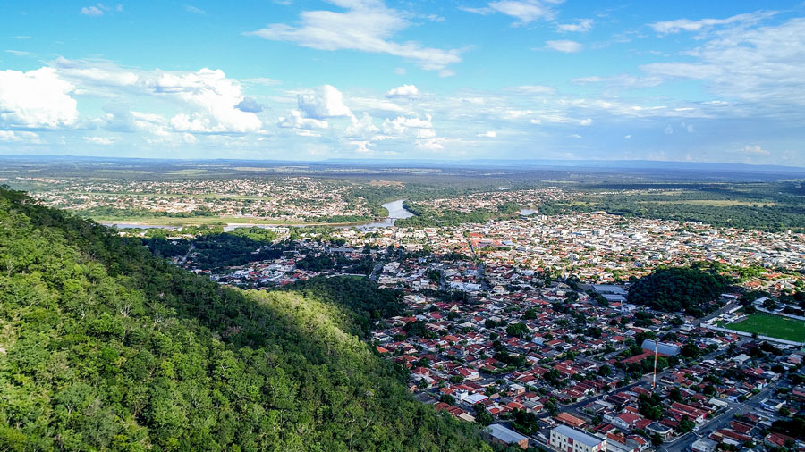
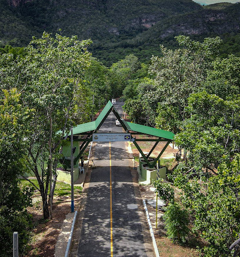
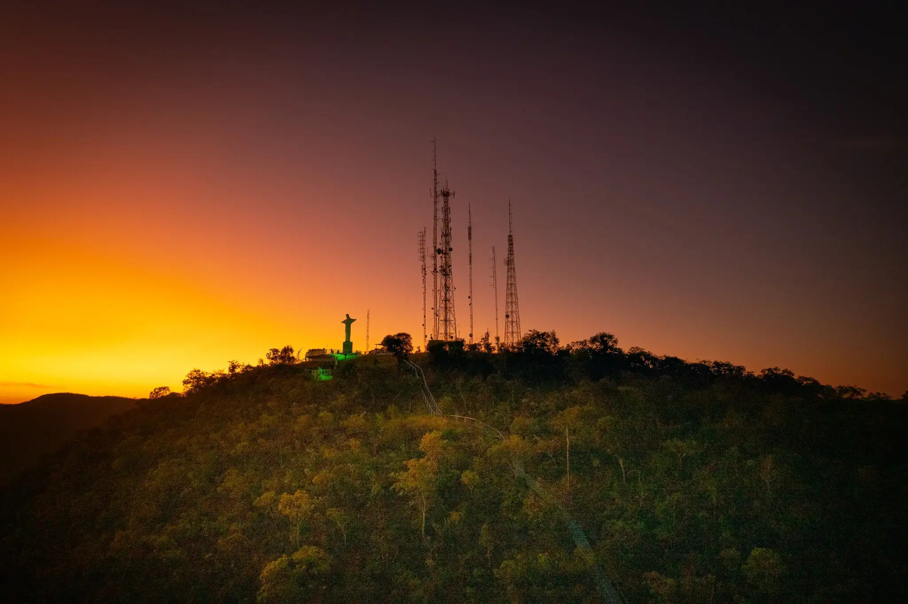
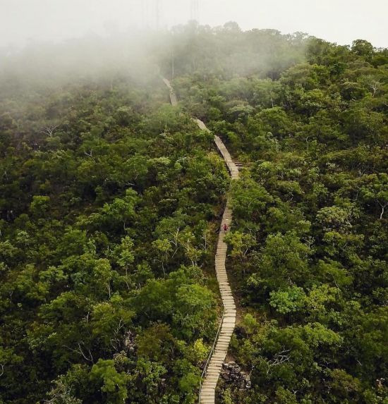

O Parque Estadual da Serra Azul é um dos principais patrimônios naturais de Barra do Garças, no estado de Mato Grosso. Localizado a poucos quilômetros do centro da cidade, o parque é conhecido por suas belas paisagens naturais, trilhas ecológicas, cachoeiras, formações rochosas e pela preservação do Cerrado mato-grossense. O local se tornou um dos destinos turísticos mais visitados da região, atraindo turistas, aventureiros e amantes da natureza de várias partes do Brasil.
Criado em 1994, o Parque Estadual da Serra Azul possui aproximadamente 11 mil hectares de área preservada e tem como principal objetivo proteger importantes espécies da fauna e flora do Cerrado, além de conservar aspectos geológicos, arqueológicos e recursos hídricos da região. O parque é administrado pela Secretaria de Estado de Meio Ambiente de Mato Grosso (SEMA-MT) e representa uma das mais importantes áreas de preservação ambiental do leste mato-grossense.
Um dos atrativos mais conhecidos do parque é a famosa Escadaria da Fé, composta por mais de 1.200 degraus que levam até o Mirante do Cristo. Durante a subida, os visitantes podem observar a vegetação típica do Cerrado, além de apreciar belas paisagens naturais da região. No topo da serra está localizada a estátua do Cristo Redentor de Barra do Garças, um dos cartões-postais mais famosos da cidade.
O Mirante da Serra Azul oferece uma vista panorâmica impressionante de Barra do Garças, Aragarças e Pontal do Araguaia, além do encontro dos rios Garças e Araguaia. O local é bastante procurado por turistas para fotografias, contemplação do pôr do sol e observação da natureza. Muitas pessoas consideram o mirante um dos pontos mais bonitos da região do Araguaia.

Além do mirante, o parque também possui diversas trilhas ecológicas que passam por áreas preservadas do Cerrado brasileiro. Entre as mais conhecidas está a Trilha das Cachoeiras, que percorre o Córrego da Avoadeira e permite aos visitantes conhecer várias cachoeiras, poços naturais e piscinas de águas cristalinas. Algumas cachoeiras possuem quedas d’água de até 25 metros de altura, formando cenários muito procurados para banho e turismo de aventura.
Outro detalhe que chama atenção no Parque Estadual da Serra Azul é sua rica biodiversidade. A região abriga diversas espécies típicas do Cerrado, incluindo aves silvestres, araras, tamanduás, macacos-prego, lobos-guará e inúmeras espécies de plantas nativas. O parque também protege nascentes e córregos importantes para as bacias hidrográficas dos rios Araguaia e Garças.
O parque também é conhecido por possuir áreas de interesse arqueológico e espeleológico. Algumas cavernas e formações rochosas da região apresentam inscrições antigas e pinturas rupestres que despertam curiosidade entre pesquisadores e visitantes. Um dos locais mais conhecidos é a Gruta dos Pezinhos, famosa pelas marcas encontradas em suas rochas e pelas histórias misteriosas ligadas ao local.
Outro ponto bastante curioso do Parque Estadual da Serra Azul é o chamado Discoporto, considerado o primeiro discoporto oficial do Brasil. O espaço foi criado devido às inúmeras histórias e relatos sobre aparições de objetos voadores não identificados na região de Barra do Garças. O local se tornou uma atração turística diferente e bastante conhecida entre visitantes interessados em mistérios e fenômenos sobrenaturais.

Além do mirante, o parque também possui diversas trilhas ecológicas que passam por áreas preservadas do Cerrado brasileiro. Entre as mais conhecidas está a Trilha das Cachoeiras, que percorre o Córrego da Avoadeira e permite aos visitantes conhecer várias cachoeiras, poços naturais e piscinas de águas cristalinas. Algumas cachoeiras possuem quedas d’água de até 25 metros de altura, formando cenários muito procurados para banho e turismo de aventura.
Outro detalhe que chama atenção no Parque Estadual da Serra Azul é sua rica biodiversidade. A região abriga diversas espécies típicas do Cerrado, incluindo aves silvestres, araras, tamanduás, macacos-prego, lobos-guará e inúmeras espécies de plantas nativas. O parque também protege nascentes e córregos importantes para as bacias hidrográficas dos rios Araguaia e Garças.
O parque também é conhecido por possuir áreas de interesse arqueológico e espeleológico. Algumas cavernas e formações rochosas da região apresentam inscrições antigas e pinturas rupestres que despertam curiosidade entre pesquisadores e visitantes. Um dos locais mais conhecidos é a Gruta dos Pezinhos, famosa pelas marcas encontradas em suas rochas e pelas histórias misteriosas ligadas ao local.
Outro ponto bastante curioso do Parque Estadual da Serra Azul é o chamado Discoporto, considerado o primeiro discoporto oficial do Brasil. O espaço foi criado devido às inúmeras histórias e relatos sobre aparições de objetos voadores não identificados na região de Barra do Garças. O local se tornou uma atração turística diferente e bastante conhecida entre visitantes interessados em mistérios e fenômenos sobrenaturais.

Além das atividades de ecoturismo, o parque também é bastante utilizado para práticas esportivas e aventuras ao ar livre, como trekking, corrida em trilhas, mountain bike, rapel e observação da natureza. Muitas trilhas possuem diferentes níveis de dificuldade, permitindo visitas tanto para iniciantes quanto para aventureiros mais experientes.
A melhor época para visitar o Parque Estadual da Serra Azul costuma ser durante o período de seca, entre os meses de maio e setembro, quando as trilhas ficam mais acessíveis e o clima mais agradável para caminhadas e atividades ao ar livre. Durante esse período, as paisagens naturais da região ficam ainda mais bonitas e atraem um grande número de turistas.
O Parque Estadual da Serra Azul representa um dos maiores símbolos do turismo ecológico de Barra do Garças e do estado de Mato Grosso. A combinação entre natureza preservada, cachoeiras, mirantes, trilhas, biodiversidade e mistérios faz com que o local seja considerado um dos destinos turísticos mais importantes da região Centro-Oeste do Brasil.
Além de todas as atrações naturais e históricas, o Parque Estadual da Serra Azul possui localização de fácil acesso para visitantes que desejam conhecer um dos cenários mais impressionantes de Barra do Garças. Situado próximo à área urbana da cidade, o parque recebe turistas durante todo o ano e oferece uma experiência única de contato com a natureza, aventura e contemplação das paisagens do Cerrado brasileiro. Abaixo, é possível visualizar a localização do Parque Estadual da Serra Azul e entender melhor onde está situado esse importante patrimônio natural do estado de Mato Grosso.